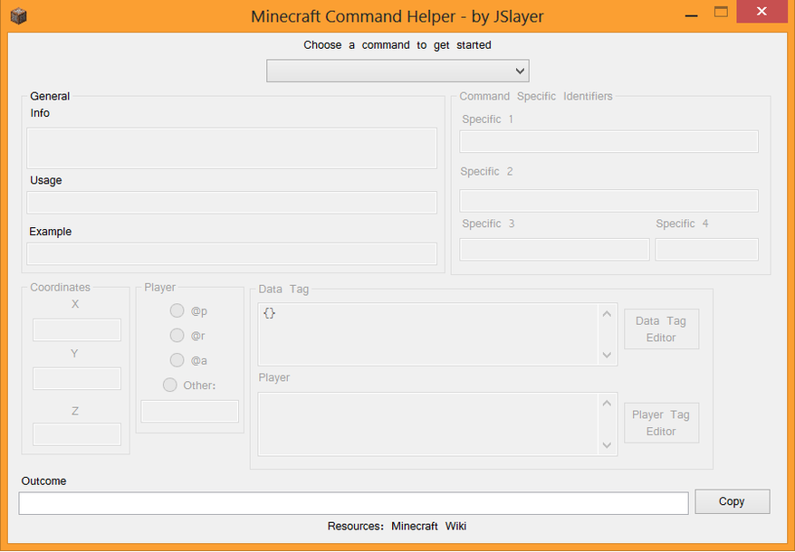
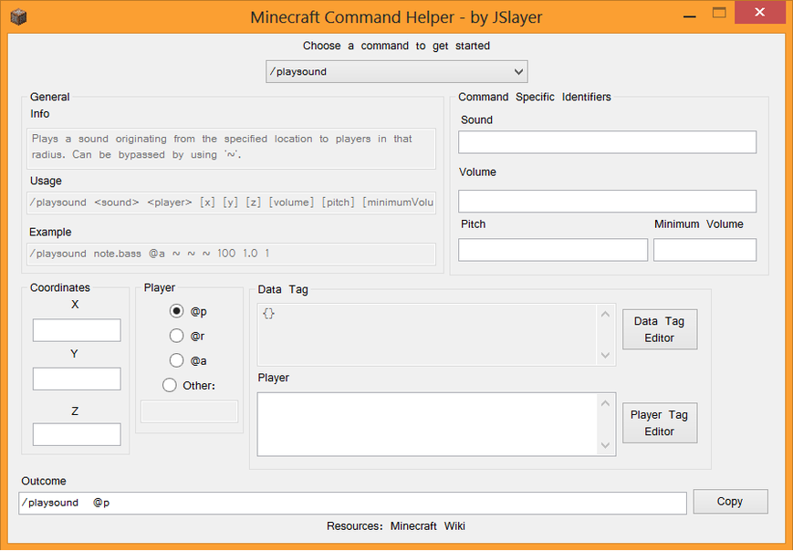
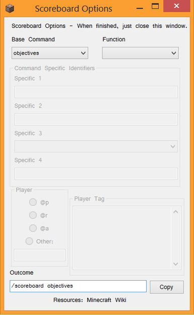
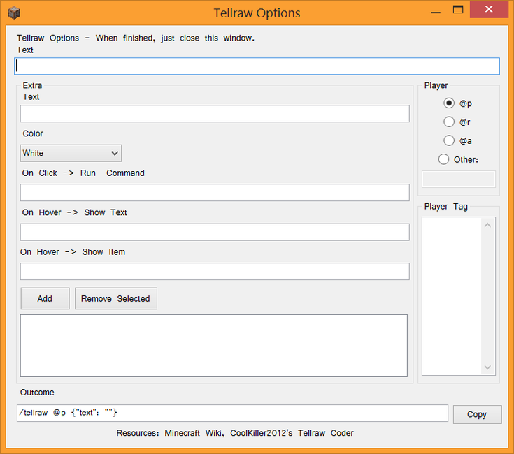

What does it do?
This program allows one to easily generate commands for Minecraft. It presents the user with all the necessary fields for the chosen command in order to create an easy to understand experience for the user.
What does it look like?
In Action
/scoreboard
After choosing some commands, a new window will appear in order to make those commands even easier. The main window will appear again after closing the newly popped up one.
/tellraw
Unfinished
Unfortunately, this program remains unfinished. Data/Player tag editors were started, but were never finished since my interest in the project waned. Also, as of one of the more recent updates to Minecraft completely overhauled the command system, this current version is very outdated. Nonetheless, if interested, it can be downloaded here.